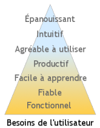

Développement itératif d’un outil simple : le gourdin

Kathy Sierra de Create passionate users s’interroge sur l’évolution des processus de développement informatique et établit une sorte de pyramide de Maslow de l’utilisateur :
À la préhistoire, c’est-à-dire il y a dix ans, l’utilisateur demandait à l’application d’être fonctionnelle, c’est-à-dire de lui permettre d’effectuer une tâche impossible autrement. Cette brute avait besoin de chasser, on lui fournissait un gourdin.
À besoin clair, démarche simple : c’était la démarche de développement en « Cascade ». Le besoin en amont, l’application en aval et on allait toujours vers l’avant. Quitte à ce qu’à l’arrivée le besoin ait changé et que l’on se retrouve avec un gourdin pour chasser les oiseaux. Cette démarche est d’ailleurs encore en vigueur dans de nombreuses entreprises, occasionnant d’immanquables retards lorsqu’il faut repartir pour un cycle long.
Une fois le besoin fonctionnel rempli, l’utilisateur demanda la fiabilité : si le gourdin se brisait sur le premier ours venu, ce bug pouvait avoir des conséquences douloureuses.
Lorsqu’il posséda un gourdin solide, l’utilisateur réclama la facilité d’apprentissage : la maîtrise des premiers gourdins nécessitait un stage de 8 mois dans une lamasserie tibétaine à déchiffrer des mantras en sanscrit. Et 8 mois quand on a des objectifs semestriels à tenir, c’est long.
Une fois équipé d’un gourdin solide et simple à utiliser, l’utilisateur voulut être plus productif : à l’époque les gourdins étaient en mousse et tuer un auroch était un travail long et fastidieux. On inventa le gourdin en bois pour chasser plus efficacement.
Que manquait-il à l’utilisateur ? Que son gourdin soit agréable à utiliser, qu’il soit « user-friendly » comme on dit chez nous. C’est à cette époque qu’un entrepreneur visionnaire fit fortune en vendant des gourdins colorés au manche enrobé de caoutchouc antidérapant.
Les fabricants de gourdins se rendirent alors compte que pour faire la différence, il fallait être au plus près des désirs de l’utilisateur. Exit la démarche de développement en « Cascade », vive la « Spirale » : développement itératif, agile, XP, etc. cycles courts qui permettent de proposer à l’utilisateur des prototypes qui tendent vers un produit fini et adapté aux besoins changeants du chasseur indécis.
Muni de son beau gourdin efficace, l’utilisateur désira s’affranchir davantage de la phase d’apprentissage : malgré les explications pourtant simples du vendeur, certains s’évertuaient à vouloir cueillir des myrtilles avec leur gourdin. Il fallait que l’utilisation soit intuitive et fasse appel à des schémas de pensée simples. On dessina sur le gourdin des images de pumas et de loups.
Mais ça ne suffisait toujours pas. Il fallait que le Néandertalien ait du plaisir, qu’il s’épanouisse dans la chasse, que sa perception du temps en soit changée. Il fallait que le challenge augmente en même temps que les capacités liées à la performance de son outil. Le besoin suprême était identifié, c’était le Flow de Csikszentmihalyi (vous avez un mouchoir ?). On ajouta des tenues bigarrées, un système de points et des règles contraignantes juste ce qu’il faut.
Le baseball était né.